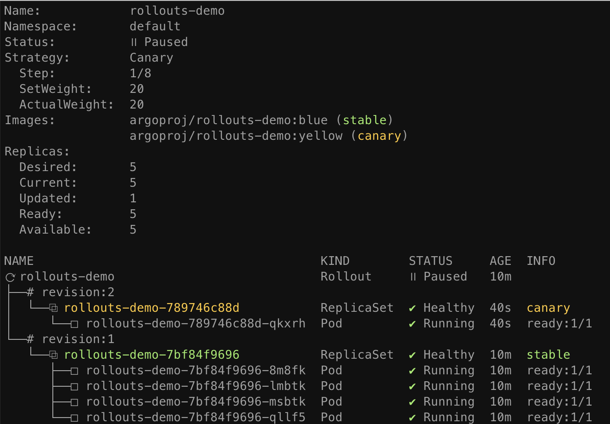
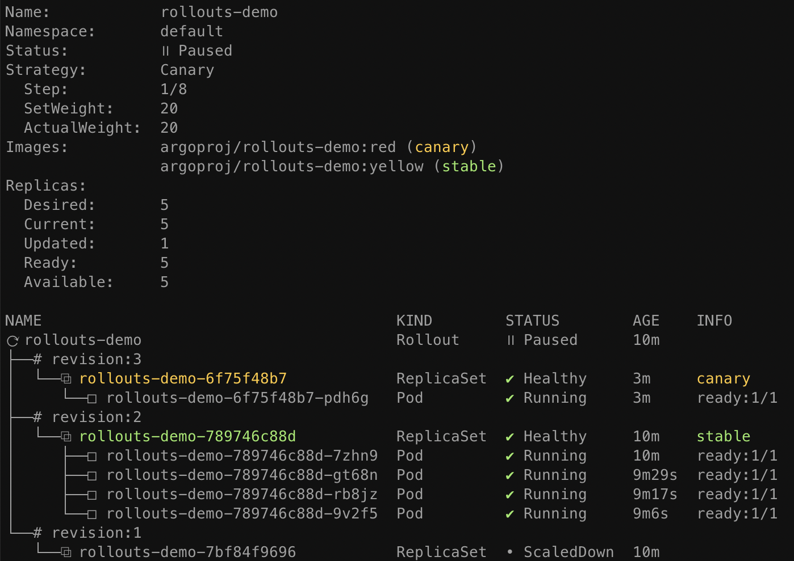
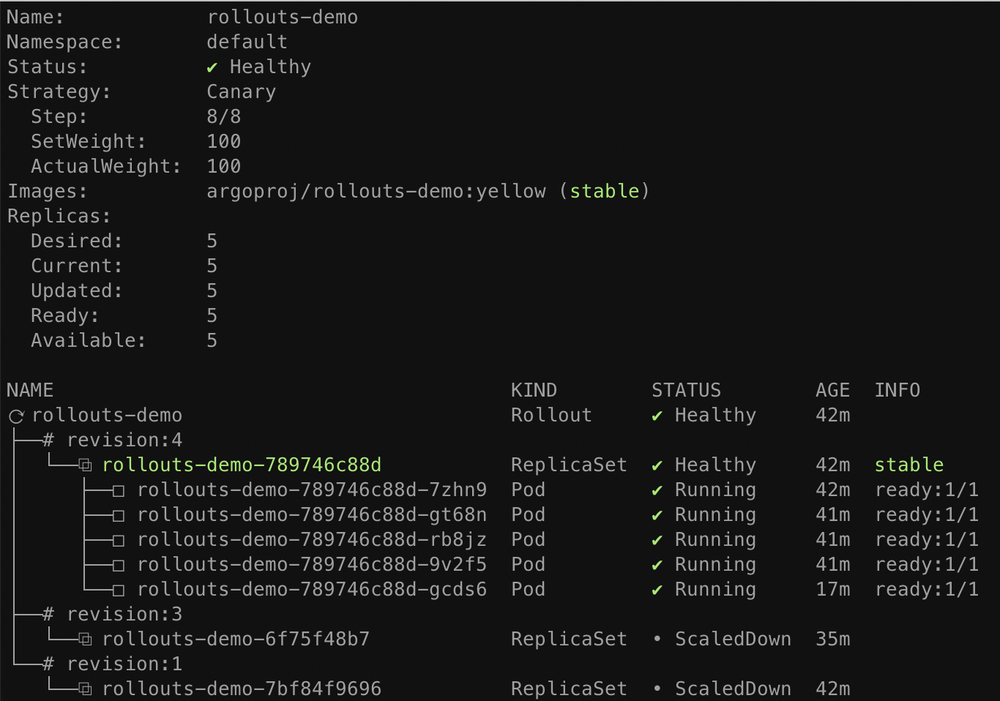

Getting Started¶
This guide will demonstrate various concepts and features of Argo Rollouts by going through deployment, upgrade, promotion, and abortion of a Rollout.
Requirements¶
- Kubernetes cluster with argo-rollouts controller installed (see install guide)
- kubectl with argo-rollouts plugin installed (see install guide)
1. Deploying a Rollout¶
First we deploy a Rollout resource and a Kubernetes Service targeting that Rollout. The example Rollout in this guide utilizes a canary update strategy which sends 20% of traffic to the canary, followed by a manual promotion, and finally gradual automated traffic increases for the remainder of the upgrade. This behavior is described in the following portion of the Rollout spec:
spec:
replicas: 5
strategy:
canary:
steps:
- setWeight: 20
- pause: {}
- setWeight: 40
- pause: {duration: 10}
- setWeight: 60
- pause: {duration: 10}
- setWeight: 80
- pause: {duration: 10}
Run the following command to deploy the initial Rollout and Service:
kubectl apply -f https://raw.githubusercontent.com/argoproj/argo-rollouts/master/docs/getting-started/basic/rollout.yaml
kubectl apply -f https://raw.githubusercontent.com/argoproj/argo-rollouts/master/docs/getting-started/basic/service.yaml
Initial creations of any Rollout will immediately scale up the replicas to 100% (skipping any canary upgrade steps, analysis, etc...) since there was no upgrade that occurred.
The Argo Rollouts kubectl plugin allows you to visualize the Rollout, its related resources
(ReplicaSets, Pods, AnalysisRuns), and presents live state changes as they occur.
To watch the rollout as it deploys, run the get rollout --watch command from plugin:
kubectl argo rollouts get rollout rollouts-demo --watch
2. Updating a Rollout¶
Next it is time to perform an update. Just as with Deployments, any change to the Pod template
field (spec.template) results in a new version (i.e. ReplicaSet) to be deployed. Updating a
Rollout involves modifying the rollout spec, typically changing the container image field with
a new version, and then running kubectl apply against the new manifest. As a convenience, the
rollouts plugin provides a set image command, which performs these steps against the live rollout
object in-place. Run the following command to update the rollouts-demo Rollout with the "yellow"
version of the container:
kubectl argo rollouts set image rollouts-demo \
rollouts-demo=argoproj/rollouts-demo:yellow
During a rollout update, the controller will progress through the steps defined in the Rollout's update strategy. The example rollout sets a 20% traffic weight to the canary, and pauses the rollout indefinitely until user action is taken to unpause/promote the rollout. After updating the image, watch the rollout again until it reaches the paused state:
kubectl argo rollouts get rollout rollouts-demo --watch

When the demo rollout reaches the second step, we can see from the plugin that the Rollout is in
a paused state, and now has 1 of 5 replicas running the new version of the pod template, and 4 of 5
replicas running the old version. This equates to the 20% canary weight as defined by the
setWeight: 20 step.
3. Promoting a Rollout¶
The rollout is now in a paused state. When a Rollout reaches a pause step with no duration, it
will remain in a paused state indefinitely until it is resumed/promoted. To manually promote a
rollout to the next step, run the promote command of the plugin:
kubectl argo rollouts promote rollouts-demo
After promotion, Rollout will proceed to execute the remaining steps. The remaining rollout steps in our example are fully automated, so the Rollout will eventually complete steps until it has has fully transitioned to the new version. Watch the rollout again until it has completed all steps:
kubectl argo rollouts get rollout rollouts-demo --watch

Tip
The promote command also supports the ability to skip all remaining steps and analysis with the
--full flag.
Once all steps complete successfully, the new ReplicaSet is marked as the "stable" ReplicaSet. Whenever a rollout is aborted during an update, either automatically via a failed canary analysis, or manually by a user, the Rollout will fall back to the "stable" version.
4. Aborting a Rollout¶
Next we will learn how to manually abort a rollout during an update. First, deploy a new "red"
version of the container using the set image command, and wait for the rollout to reach the
paused step again:
kubectl argo rollouts set image rollouts-demo \
rollouts-demo=argoproj/rollouts-demo:red

This time, instead of promoting the rollout to the next step, we will abort the update, so that it
falls back to the "stable" version. The plugin provides an abort command as a way to manually
abort a rollout at any time during an update:
kubectl argo rollouts abort rollouts-demo
When a rollout is aborted, it will scale up the "stable" version of the ReplicaSet (in this
case the yellow image), and scale down any other versions. Although the stable version of the
ReplicaSet may be running and is healthy, the overall rollout is still considered Degraded,
since the desired version (the red image) is not the version which is actually running.

In order to make Rollout considered Healthy again and not Degraded, it is necessary to change the
desired state back to the previous, stable version. This typically involves running kubectl apply
against the previous Rollout spec. In our case, we can simply re-run the set image command using
the previous, "yellow" image.
kubectl argo rollouts set image rollouts-demo \
rollouts-demo=argoproj/rollouts-demo:yellow
After running this command, you should notice that the Rollout immediately becomes Healthy, and there is no activity with regards to new ReplicaSets becoming created.

When a Rollout has not yet reached its desired state (e.g. it was aborted, or in the middle of an update), and the stable manifest were re-applied, the Rollout detects this as a rollback and not a update, and will fast-track the deployment of the stable ReplicaSet by skipping analysis, and the steps.
Summary¶
In this guide, we have learned basic capabilities of Argo Rollouts, including:
- Deploying a rollout
- Performing a canary update
- Manual promotion
- Manual abortion
The Rollout in this basic example did not utilize a ingress controller or service mesh provider to route traffic. Instead, it used normal Kubernetes Service networking (i.e. kube-proxy) to achieve an approximate canary weight, based on the closest ratio of new to old replica counts. As a result, this Rollout had a limitation in that it could only achieve a minimum canary weight of 20%, by scaling 1 of 5 pods to run the new version. In order to achieve much finer grained canaries, an ingress controller or service mesh is necessary.
Follow one of the traffic routing guides to see how Argo Rollouts can leverage a networking provider to achieve more advanced traffic shaping.